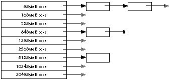

Although C++ is a powerful and flexible language, its image of the world inside your
computer was shaped by operating systems that were a bit more "traditional" than the
Macintosh's. As a result, C++ routines that work fine for MPW tools can cause severe
problems when used in a Macintosh application. But there are ways around these
problems. This article describes a technique that allows you to use normal C++
objects in your Macintosh applications without undue discomfort.
Using C++ objects in the handle-based world of the Macintosh Memory Manager can
get pretty tricky at times. The Apple extension to C++ that solves the memory
allocation problems you're bound to run into can create other headaches for you if you
need to use one or more of several important C++ features in your program. In this
article, you'll learn about the memory allocation problems you can expect to encounter
when you create objects in C++. You'll also learn how to get around these problems
while still retaining the use of important C++ features, by creating a special class
PtrObject. You'll see a sample program that uses PtrObject, and you'll learn how to
implement the class.
In C++, objects are created dynamically with the new operator, and disposed of with
the delete operator when you've finished with them, like this:
TMyObject* aMyObjectRef; aMyObjectRef = new TMyObject; // Create a TMyObject object. aMyObject->AReallyCoolRoutine(); // Do something useful... delete aMyObject; // Delete the object.
When you use these operators, C++ transforms them into calls to operatornew and
operator delete. The default versions of operatornewand operatordeleteprovided
in the C++ library use the C Standard Library routines malloc and free,
respectively, to allocate and deallocate the memory needed to store the object.
(Actually, the calloc routine is called to allocate the memory, but callocjust turns
around and calls malloc to do the real work.)
These routines work fine for MPW tools, but they can cause the following severe
problems when used in a Macintosh application:
malloc and free"
Fortunately, you can override the default versions of operatornewand
operatordelete in your own classes to get explicit control over memory allocation.
To help you do this, Apple extended C++ to include a predefined base class called
HandleObject. If classes you define inherit from HandleObject, the Mac's
NewHandle and DisposHandletraps are called instead of the default operator new
and operator delete routines.
While this solves the memory problems just mentioned, it also precludes the use of
several important C++ features. Here is a partial list of the restrictions that apply
when classes you define inherit fromHandleObject:
new operator. The only*x) is to refer*x.y or x->y).new->MyObjects[10].
As you can see, there are quite a few useful things you can't do in C++ if you use
HandleObject. Most programs should be able to live with these restrictions, but if
your program needs to use multiple inheritance or arrays of objects, a different
solution is called for.
Why do the malloc and free routines wreak so much havoc in a Macintosh
application? The main reason is that these routines were originally written for UNIX
systems, which have no built-in memory allocation facilities. So these library
routines ended up doing everything themselves, including free list management.
This isn't all bad, since these routines are simpler and faster than their Macintosh
Memory Manager equiva- lents, but they can cause the severe problems listed earlier
in this article for a Macintosh application. The worst part is that these problems can
occur even if your application doesn't callmalloc directly. In many situ- ations, C++
callsmalloc for you, as do many of the other routines in the standard library.
Here's how it all works (in MPW, at least):
When you request some memory frommalloc, it rounds the size up to the nearest
power of 2 (8-byte mini- mum, ID checked at the door). If you ask for more than
2048 bytes, malloc just calls NewPtr to allocate the memory, and DisposPtr to get
rid of it. Otherwise,malloc checks its internal free list looking for blocks of the
specified size. If it doesn't find any blocks of that size, it allocates a chunk of memory
with NewPtr big enough to hold 2K worth of blocks (plus 2 bytes overhead per block),
and adds the new blocks to the free list for that size. It then returns you the first block
off of the free list.
When you dispose of memory with the free routine, it looks at the block header to
determine which free list to put the block in, and inserts it into the list (sorted by
block address to allow for more intelligent freestore management in the future).
Here's what a small free list looks like:

MPW (and other Mac development systems) provides versions of these routines to
make life easier for people who are porting code from UNIX systems (or MS-DOS,
OS/2, etc.). However, since the mallocroutine calls NewPtr rather indiscrimately, it
can cause blocks to be allocated in very inconvenient places inside your heap, and once
these blocks have been allocated, they are never disposed of.
In just one possible scenario, the user opens a large document with your program
SuperOOPWrite and cre- ates 1000 standard C++ objects (each allocated by malloc)
to represent the elements of the document, each about 100 bytes long. malloc asks
NewPtr to create 63 blocks of memory (about 2K each), and you have about 100K less
free memory than you used to. Now the user closes the document, and you dutifully
dispose of all of your objects. Guess what? You still have 100K less memory available
to you as far as the Mac's Memory Manager is concerned, your heap is chock full of 2K
nonrelocatable blocks, and you don't have any way to preflight memory for the next
time the user wants to open a document.
By the way, if this algorithm sounds familiar to you, it's because the MPW code is
based on a public domain version of malloc written by Chris Kingsley.
The solution to memory allocation problems when you can't use HandleObject is to
create a special class PtrObject analogous to the HandleObject class. This class
overrides both operatornewand operatordelete, so that real Memory Manager
pointers are used instead of the pointers returned by the default operatornew.
PtrObjectalso supports the allocation of objects into a separate heap, which further
reduces memory fragmentation.
The method functions of the class PtrObject are as follows:
AllocHeap | This function creates a separate heap. All descendants of class |
PtrObject cre- ated after calling this function will use this | |
| heap. If you do not call this function in your program, the | |
| default (application) heap will be used. | |
DisposeHeap | This function disposes of the heap allocated by a previous call |
to AllocHeap. You should call this function before quitting | |
your application. Any PtrObjects created inside the heap | |
| will be invalid, so make sure that you aren't using any of | |
those objects anymore (neither operatordelete nor the | |
| destructor for these objects will be called). | |
FreeMemory | This function returns the amount of free space in the |
PtrObject heap, as returned by the trap FreeMem. If no | |
| separate heap exists, this function will return the amount of | |
| free memory in the default (application) heap. | |
MaxMemory | This function returns the size of the largest free block in |
the PtrObject heap, as returned by the trap MaxMem. If no | |
| separate heap exists, this function will return the amount of | |
| free memory in the default (application) heap. | |
operator new | This function is called by the C++ compiler to allocate |
memory for PtrObjects. You never need to call it directly. | |
operator delete | This function is called by the C++ compiler to deallocate |
memory used by PtrObjects. You never need to call it | |
| directly. |
Here is the class declaration for PtrObject, which would normally be found in the
header file PtrObject.h.
class PtrObject {
public:
static OSErr AllocHeap(size_t heapSize);
// Create a heap heapSize bytes long to allocate
// objects in.
static void DisposeHeap();
// Free up the heap allocated by a previous call
// to AllocHeap.
static long FreeMemory();
// Return the total amount of free space in the heap.
static Size MaxMemory();
// Return the size of the largest free block in the heap.
void* operator new(size_t size);
void operator delete(void* p);
// These are our special allocation and
// deallocation operators.
private:
static THz fZone;
// Our private zone pointer.
};
Notice that the AllocHeap, DisposeHeap, FreeMemory, and MaxMemorycalls are all
static member functions, and that the fZone variable is a static data member . In
C++, static members are shared across all instances of a class. You should use static
members in place of global variables and functions whenever possible, since they have
limited scope (which means fewer name conflicts) and they are logically tied to the
class in which they are declared (which means more readable source code). To call a
static member function, the syntax is
ClassName::StaticFunctionName(/* parameters, if any */);
Now that you've seen the interface to the PtrObject class, here is a small sample
application that uses it. This program isn't very useful-- all it does is define a
subclass of PtrObject, create an instance of that object, and call one of its methods.
The first thing we have to do is the standard setup for a Macintosh application, which
in this case means including all of the needed header files for the Macintosh Toolbox
and the C Standard Library:
// TestPtrObject.cp #include <Types.h> #include <QuickDraw.h> #include <Fonts.h> #include <SegLoad.h> #include <Events.h> #include <Windows.h> #include <Menus.h> #include <TextEdit.h> #include <Dialogs.h> #include <Memory.h> #include <OSUtils.h> #include <stdio.h> #include <string.h> #include <stddef.h>
Next we include the header file for the PtrObject class (just shown), and define a
new class TLout that is derived from it:
#include "PtrObject.h"
// A small class that contains some data and a constructor,
// but spends all of its time on street corners cadging
// cigarettes instead of doing useful work.
class TLout : public PtrObject {
public:
TLout() { DoCadge(); }; // Our constructor.
virtual void DoCadge(); // A rude member function.
private:
char fArray[256];
};
void TLout::DoCadge()
{
strcpy(fArray,"Hey buddy, spare a cig?");
}
That's all it takes to define a class with the correct memory management behavior.
Here is the main program, which uses our newly defined TLout class:
void InitToolbox(); // Forward declaration.
main()
{
// We need this much space to store the objects
// we're going to initialize - in this case, 16KBytes.
const size_t kDefaultHeapSize = 0x4000;
InitToolbox(); // Initialize Mac Toolbox (ho hum).
// Create a heap for PtrObjects to live in.
OSErr heapErr = PtrObject::AllocHeap(kDefaultHeapSize);
// If we got an error, quit - this isn't a real
// application, so we don't need error handling, right?
if (heapErr != noErr)
ExitToShell();
// Create an object - will go in separate heap automatically.
TLout* aLout = new TLout; // Do that voodoo that TLouts do…
if (aLout != nil)
{
aLout->DoCadge();
delete aLout;
// Delete our object now that we have finished with it.
}
// Dispose of the heap.
PtrObject::DisposeHeap();
ExitToShell();
}
One important thing needs to be pointed out here: you need to
callPtrObject::AllocHeap as early in your program as possible, or the newly
created heap may fragment your application heap. Finally, just for completeness,
here's the implementation of the InitToolbox routine, which makes sure that all of
the necessary pieces of the Mac Toolbox are initialized:
voidInitToolbox()
{
//StandardMacintoshinitialization.
InitGraf((Ptr)&qd.thePort);
InitFonts(); InitWindows();
InitMenus();
TEInit();
InitDialogs(nil);
InitCursor();
MaxApplZone();
}
# TestPtrObject.make
# by Andrew Shebanow (with some help from the CreateMake script)
OBJECTS = ∂
PtrObject.cp.o ∂
TestPtrObject.cp.o
SymOptions = -sym on
CPlusOptions = {SymOptions}
{OBJECTS} ƒƒ PtrObject.h
TestPtrObject ƒƒ {OBJECTS}
Link -w {SymOptions} -mf {OBJECTS} ∂
"{CLibraries}"CSANELib.o ∂
"{CLibraries}"Math.o ∂
"{CLibraries}"CPlusLib.o ∂
"{CLibraries}"StdCLib.o ∂
"{CLibraries}"CInterface.o ∂
"{CLibraries}"CRuntime.o ∂
"{Libraries}"Interface.o ∂
-o TestPtrObject
PtrObject.cp.o ƒ PtrObject.cp PtrObject.h
TestPtrObject.cp.o ƒ TestPtrObject.cp PtrObject.h
Now that we've seen how to use class PtrObject, we need to implement it. We must
first include all the necessary header files and allocate our static member data:
// PtrObject.cp #include <Memory.h> #include <Errors.h> #include <stdio.h> #include <stddef.h> #include "PtrObject.h" // Static data members actually need to be declared outside of the // class definition in order to have space allocated. THz PtrObject::fZone = nil;
Next we have the AllocHeapfunction.
OSErr PtrObject::AllocHeap(size_t heapSize)
{
// By default, the heap gets kNumDfltMasters master pointers.
// A small number, but it shouldn't matter, since we will only
// be allocating Ptrs in this heap and Ptrs don't use master
// pointers.
const short kNumDfltMasters = 16;
// This magic number from Inside Mac, vol. II, chapter 1, is
// the amount of space required for the zone header and trailer,
// and the master pointer block. We add this to the requested
// heap size to compensate.
const size_t kZoneOverhead =
64 + 8 + (sizeof(long) * kNumDfltMasters);
heapSize += kZoneOverhead; // Factor in overhead.
// Allocate space for the zone.
Ptr zonePtr = NewPtr(heapSize);
if (!zonePtr) // if alloc fails, return error
return MemError(); // Get a pointer to the end of the heap.
Ptr limitPtr = (Ptr) (((ptrdiff_t) zonePtr) + heapSize);
// Initialize the zone.
InitZone(nil, kNumDfltMasters, limitPtr, zonePtr);
// Save the zone pointer in our static class variable.
fZone = (THz) zonePtr;
return noErr;
}
The DisposeHeap member function is much simpler. It just checks to see if we
allocated a zone in the past, and if so, it disposes of the heap's memory. This will
destroy any objects that were allocated inside the heap, which could be dangerous, so
be careful when you call this routine.
void PtrObject::DisposeHeap()
{
// If zone actually exists, dispose of it.
if (fZone)
{
DisposPtr((Ptr) fZone);
fZone = nil;
}
}
Next we have the FreeMemory and MaxMemoryfunctions. We'll show them together,
since they are almost identical. The only thing of note here is the way we switch in our
special heap if it exists.
long PtrObject::FreeMemory()
{
THz savedZone;
// Before we can return the amount of free
// memory, we need to switch to the correct zone.
if (fZone)
{
savedZone = GetZone(); // Save current zone.
SetZone(fZone); // Make our zone current.
}
long free = FreeMem(); // Get total free space.
if (fZone)
SetZone(savedZone); // Restore previous zone.
return free;
}
Size PtrObject::MaxMemory()
{
THz savedZone;
// Before we can return the maximum block size,
// we need to switch to the correct zone.
if (fZone)
{
savedZone = GetZone(); // Save current zone.
SetZone(fZone); // Make our zone current.
}
Size tSize; // We know the heap can't grow,
// but we have to have a temp
// variable to satisfy the Toolbox.
Size max = MaxMem(&tSize); // Get size of biggest block.
if (fZone)
SetZone(savedZone); // Restore previous zone.
return max;
}
Now we get to the heart of the class, the operator new function. Like the FreeMemory
call, operator newswitches to our private heap before it actually allocates memory,
and restores the previous heap when it is done. The actual memory allocation is done
by a call to everyone's favorite Macintosh trap, NewPtr.
void* PtrObject::operator new(size_t size)
{
THz savedZone;
// before we can allocate memory, we need to switch to the
// correct zone
if (fZone)
{
savedZone = GetZone(); // Save current zone.
SetZone(fZone); // Make our zone current.
}
Ptr p = NewPtr(size); // Allocate memory for object.
if (fZone)
SetZone(savedZone); // Restore previous zone.
return p;
}
Last, we have the operator delete function. All it does is dispose of the memory
occupied by the object. We don't need to swap in the private heap here, since the
Memory Manager keeps track of the heap that the pointer belongs to for us.
void PtrObject::operator delete(void* p)
{
DisposPtr((Ptr) p); // This works regardless of the zone
// the pointer was allocated in.
}
That's all there is to the PtrObject class. If you wish to explore the stranger side of
C++ (multiple inheritance and so on), you should use it, since it allows your
creations to live in the complicated world of the Macintosh Memory Manager.
ANDY SHEBANOW , a DTS engineer, wrote this article for the best of reasons: "The
beer people had their say in the last issue, and it's about time the Mountain Dew people
spoke up." His highly developed personal skills have earned him the affectionate
nickname "The Shebanator." After working for a medical imaging company, he joined
Apple twenty-odd months ago. It's been so long since he was outside that he's forgotten
what his hobbies are; he vaguely remembers some- thing about driving cars at
excessive and/or illegal speeds.*Consult the MPW C++ Reference , available from
APDA as part of the MPW C++ package, for a full list of restrictions on C++ features
in effect when classes you define inherit from HandleObject.*